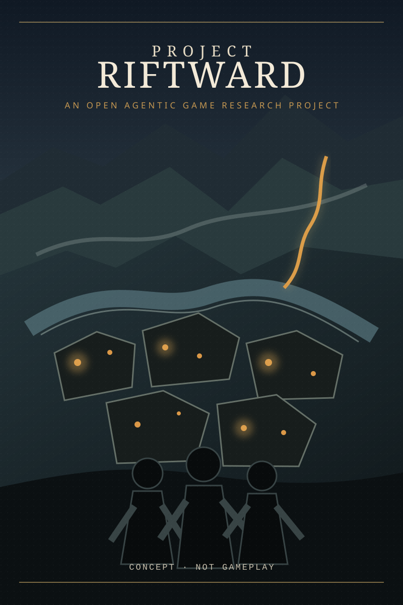

PROJECT RIFTWARDOPEN RESEARCH BUILD

LINUX
WINDOWS
macOS
WINDOWS
macOS
FOSS · AGENTIC SDLC · LOW-SPEC BY DESIGN
Eine vollständig digitale Erinnerung an Box, Disc, Handbuch und Magazinseite – für ein offenes Forschungsprojekt darüber, wie weit KI ein echtes Spielsystem bauen kann und wie wenig Hardware gutes Gaming wirklich braucht.
CONCEPT · NOT GAMEPLAY Runtime und repräsentatives Gameplay sind noch nicht fertig.

01 / THE DIGITAL EDITION
Keine physische Ware. Eine interaktive digitale Sammlung, die das Ritual klassischer PC-Veröffentlichungen zurückholt und jeden Claim an den echten Projektstand bindet.
FIELD NOTES
Die Welt erinnert sich an Zustände, die vielleicht nie waren. Wasser, Stein und Schatten folgen Regeln – nur nicht immer denselben.
Heimat ist eine Tätigkeit, keine Herkunft.
Du beginnst als Kartografin. Was du verstehst, wird zur Route. Was du rettest, wird zur Gemeinschaft. Was du aufbaust, verändert das Land.
THREE SCALES
HOW FAR CAN AN AGENTIC SDLC REALLY GO?
02 / PUBLIC PROJECT STATUS
Diese Werte werden beim Pages-Deployment direkt aus dem Repository erzeugt. Terminal-Uptime ist keine Autonomie und Konzeptgrafik kein Gameplay.
03 / FOUR QUESTIONS
Effizienz ist hier Produktqualität und politische Position. Ob harte Optimierung und KI-Aufwand wirklich längere Hardware-Nutzung ermöglichen, bleibt eine zu prüfende Hypothese – kein grünes Versprechen.
Wie lange konvergiert ein System aus Mission, Kontext, Werkzeugen und unabhängigen Gates ohne menschlichen Eingriff?
Misst produktive Outcomes, nicht offene Terminals.Wie viel Atmosphäre, taktische Lesbarkeit und Systemtiefe passen in feste CPU-, GPU- und Speicherbudgets?
Ziel: i7-3770 / GTX-660-Klasse · 1080p / 30 FPS.Kann zusätzlicher einmaliger Optimierungsaufwand über viele Spielsitzungen niedrigere Endgeräteanforderungen aufwiegen?
Unentscheidbar ohne offene Messdaten und Gegenfaktum.Brauchen bessere Spiele wirklich stärkere Hardware – oder zuerst bessere Datenwege, kleinere Laufzeitschichten und härtere Budgets?
DDR3 · Linux · M1/8 GB · gleiche Szene, gleiche Spielsysteme, offene A/B-Messung.04 / THE RULE
Ein Modelloutput ist ein Kandidat.
Nur gemessene Evidenz bewegt das Projekt.